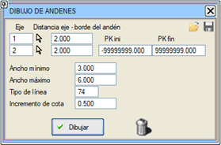
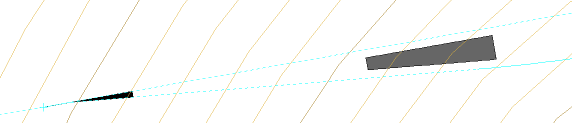

Bu
diyalog kutusu aracılığıyla, tanımlanmış iki hat arasındaki peronu
konumlandırmamıza yardımcı olacak kapalı bir çizgiyi planda
çizebileceğiz.
Diyalog kutusunda aşağıdaki parametreleri belirtmemiz gerekecektir:
- Birinci eksen (numarasını yazarak veya ekseni seçerek).
- İkinci eksen (numarasını yazarak veya ekseni seçerek).
- Başlangıç KM'si ve bitiş KM'si belirleyerek peronu sınırlama imkanı.
- Peron kenarının birinci eksene mesafesi.
- Peron kenarının ikinci eksene mesafesi.
- Peronun minimum genişliği.
- Peronun maksimum genişliği.
- Birinci eksenin kırmızı kotuna göre kot artışı.
- Peronu çizmek için çizgi tipi.
*.dda uzantılı bir yapılandırma dosyasını kaydetmek/yüklemek mümkündür.


|